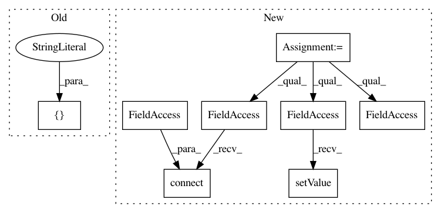

af2d9c92e3e59ffc435c3f513c2caf179acb3252,ilastik/workflows/examples/thresholdMasking/thresholdMaskingWorkflow.py,ThresholdMaskingWorkflow,__init__,#ThresholdMaskingWorkflow#Any#Any#Any#Any#,29
Before Change
self.dataSelectionApplet = DataSelectionApplet(self, "Input Data", "Input Data", supportIlastik05Import=True, batchDataGui=False)
self.thresholdMaskingApplet = ThresholdMaskingApplet(self, "Thresholding", "Thresholding Stage 1")
opDataSelection = self.dataSelectionApplet.topLevelOperator
opDataSelection.DatasetRoles.setValue( ["Raw Data"] )
self._applets.append( self.dataSelectionApplet )
self._applets.append( self.thresholdMaskingApplet )
After Change
opDataSelection.DatasetRoles.setValue( self.ROLE_NAMES )
// Instantiate DataExport applet
self.dataExportApplet = DataExportApplet(self, "Data Export")
// Configure global DataExport settings
opDataExport = self.dataExportApplet.topLevelOperator
opDataExport.WorkingDirectory.connect( opDataSelection.WorkingDirectory )
opDataExport.SelectionNames.setValue( self.EXPORT_NAMES )
self._applets.append( self.dataSelectionApplet )
self._applets.append( self.thresholdMaskingApplet )
In pattern: SUPERPATTERN
Frequency: 3
Non-data size: 8
Instances
Project Name: ilastik/ilastik
Commit Name: af2d9c92e3e59ffc435c3f513c2caf179acb3252
Time: 2017-03-03
Author: dominik.kutra@gmail.com
File Name: ilastik/workflows/examples/thresholdMasking/thresholdMaskingWorkflow.py
Class Name: ThresholdMaskingWorkflow
Method Name: __init__
Project Name: ilastik/ilastik
Commit Name: c164541f82302434ff40542b32851da4969a3c5e
Time: 2013-02-12
Author: bergs@janelia.hhmi.org
File Name: workflows/pixelClassification/pixelClassificationWorkflow.py
Class Name: PixelClassificationWorkflow
Method Name: _initBatchWorkflow
Project Name: ilastik/ilastik
Commit Name: 38e4e53a29a3818f17d9cf62aeac119faf4fc055
Time: 2018-04-25
Author: jonas.massa@iwr.uni-heidelberg.de
File Name: ilastik/applets/networkClassification/opNNclass.py
Class Name: OpNNClassification
Method Name: __init__